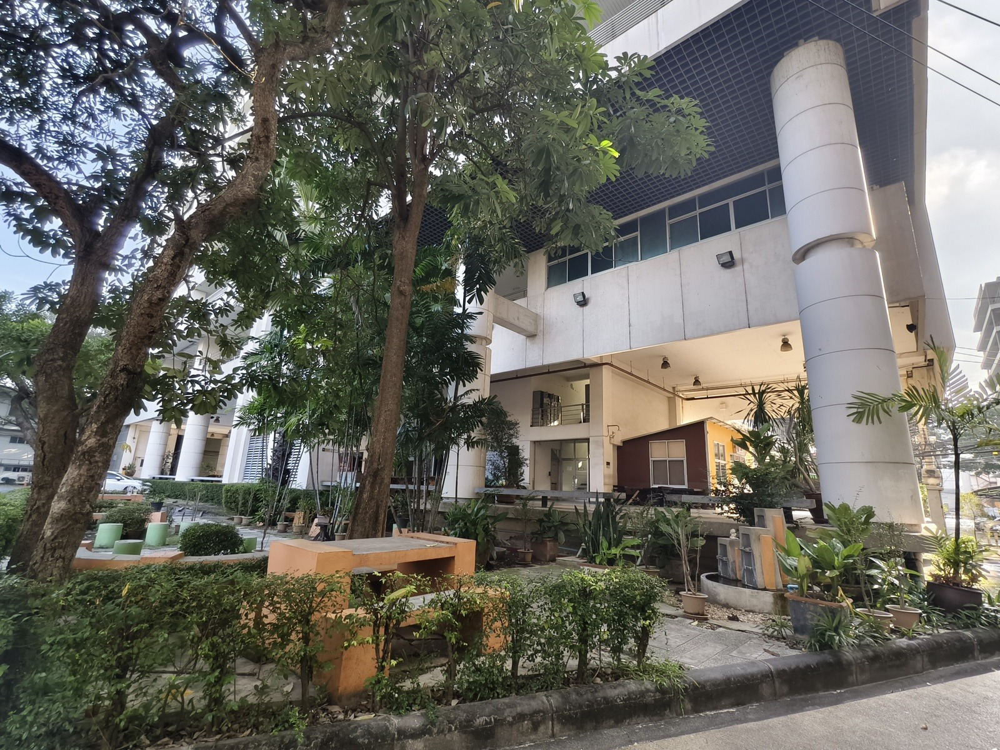

การเรียนรู้ที่ไร้ความหวัง ตอนที่ 2: เป้าหมายที่ยิ่งใหญ่ แต่ไม่เปลี่ยนพฤติกรรม
{kind=link}

บทความนี้ไม่ได้บอกว่ามหาวิทยาลัยไทยขาดเป้าหมาย ตรงกันข้าม มันชี้ว่าระบบเต็มไปด้วยเป้าหมายที่ยิ่งใหญ่เสมอ ทั้งความเป็นเลิศ นวัตกรรม ความยั่งยืน หรือความเป็นระดับโลก แต่ปัญหาไม่ได้อยู่ที่คำ หากอยู่ที่เป้าหมายจำนวนมาก จับต้องไม่ได้ และไม่ชัดว่าหมายถึงอะไรในทางปฏิบัติ
เมื่อเป้าหมายทำหน้าที่สร้างความชอบธรรม มากกว่าสร้างทิศทาง มันจึงไม่เปลี่ยนวิธีคิด วิธีทำงาน หรือพฤติกรรมขององค์กร แม้องค์กรจะพูดถึงสิ่งเหล่านี้อย่างต่อเนื่องก็ตาม
ประเด็นหลักของโพสต์นี้คือ เป้าหมายที่ยิ่งใหญ่จำนวนมากไม่ได้ผูกกับ อำนาจตัดสินใจ ไม่ผูกกับงบประมาณ และไม่ผูกกับความรับผิดชอบ ทำไม่เสร็จก็ไม่ชัดว่าใครคือผู้รับผิด ใครทำอะไรก็ดูเหมือนทำมาก แต่ไม่ชัดว่าผลผลิตจริงคืออะไร
เมื่อเป้าหมายไม่ต้องรับผิด มันก็ไม่เปลี่ยนพฤติกรรมองค์กร
บทความนี้อธิบายชัดว่า หากการดำรงอยู่ในระบบยังปลอดภัยจากความเสี่ยงของความไม่สำเร็จ เป้าหมายที่ประกาศไว้ก็จะไม่เปลี่ยนวิธีคิดและพฤติกรรมขององค์กร เพราะไม่มีแรงบังคับให้ใครต้องปรับตัวจริง
เป้าหมายจึงกลายเป็นสิ่งที่ อ้างได้ แต่ไม่ใช่สิ่งที่ต้องทำให้เกิดขึ้น ซึ่งเป็นความต่างสำคัญระหว่างภาษาของยุทธศาสตร์กับกลไกของการเปลี่ยนแปลงจริง
ในระบบที่อยู่รอดสำคัญกว่าการเปลี่ยน คนที่อยากอยู่รอดก็พอแล้ว
ข้อสรุปที่คมที่สุดของโพสต์คือ ระบบแบบนี้ไม่ต้องมีคนเลว แค่มีคนที่อยากอยู่รอดก็พอ เพราะเมื่อการไม่เปลี่ยนอะไรไม่ใช่ความผิด แต่การพยายามเปลี่ยนกลับเป็นความเสี่ยง ระบบก็จะคัดคนให้เลือกความปลอดภัยแทนการเปลี่ยนแปลงเอง
นี่ทำให้บทความชิ้นนี้เชื่อมตรงกับทั้งชุดการเรียนรู้ที่ไร้ความหวัง: ปัญหาไม่ได้อยู่ที่ถ้อยคำยิ่งใหญ่ แต่คือการที่เป้าหมายไม่ถูกออกแบบให้มีผลต่อแรงจูงใจ การตัดสินใจ และความรับผิดชอบขององค์กรจริง